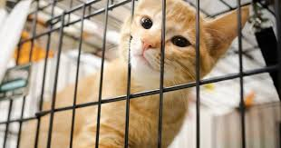
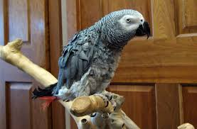

Steve is a busy, brown-eyed girl who's a great companion for leisurely walks. At 8 years young, this pretty brindle lad will thrive in an active home with adults who already have dog experience. Steve knows "sit", "play dead" and is house-trained. With a guiding hand and a bit of patience, he's eager to learn more! He would love to be your only pet. Come meet this loving yet independent lad, and see if he's the one for you!
Lacy is a mellow girl looking for a calm, loving family with some cat experience. She is a little shy at first, but becomes friendly and affectionate once she feels at ease. At 14 years old, Lacy has plenty of laid-back love and companionship to give. Come meet this sweet little soul and see if she's the buddy for you! No adoption fees.
Meet Dexter aged 4! This gorgeous, energetic young parakeet is looking for a friend and a new forever home! He's super active and loves chirping along to recorded nature and bird songs. Recently he has been eating the seed heads from the fresh grass from the garden along with his seed and pellets! S